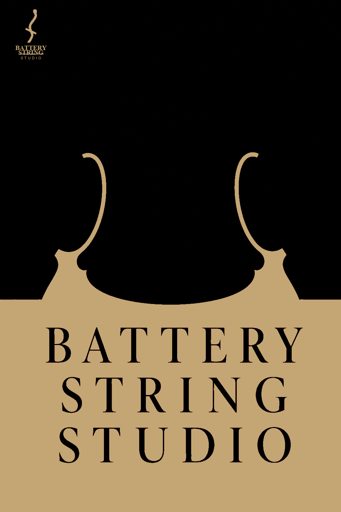
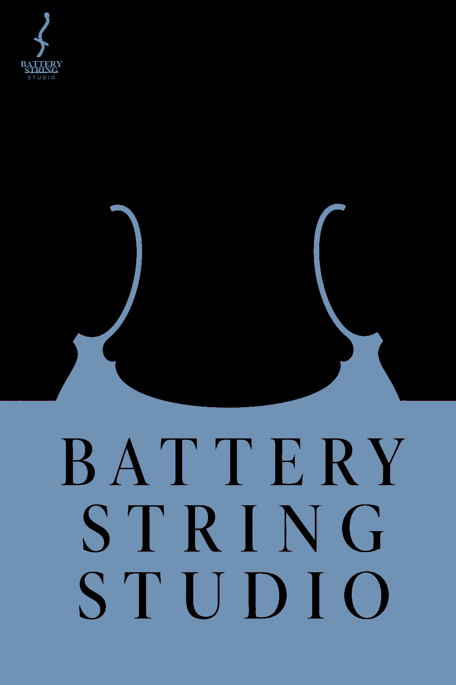
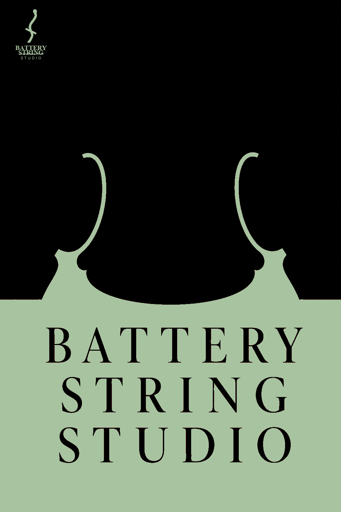
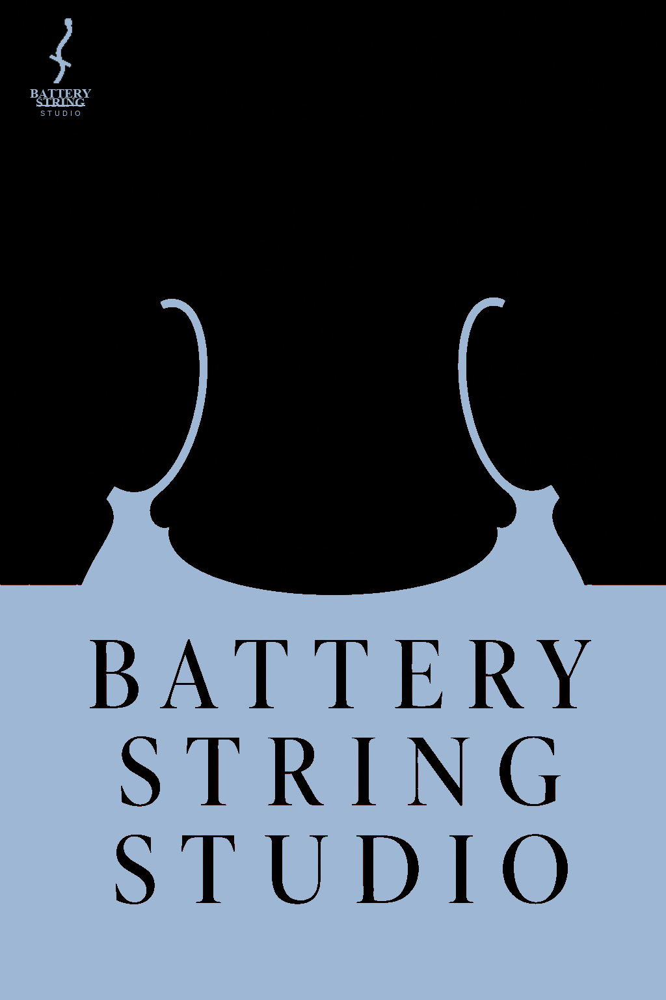
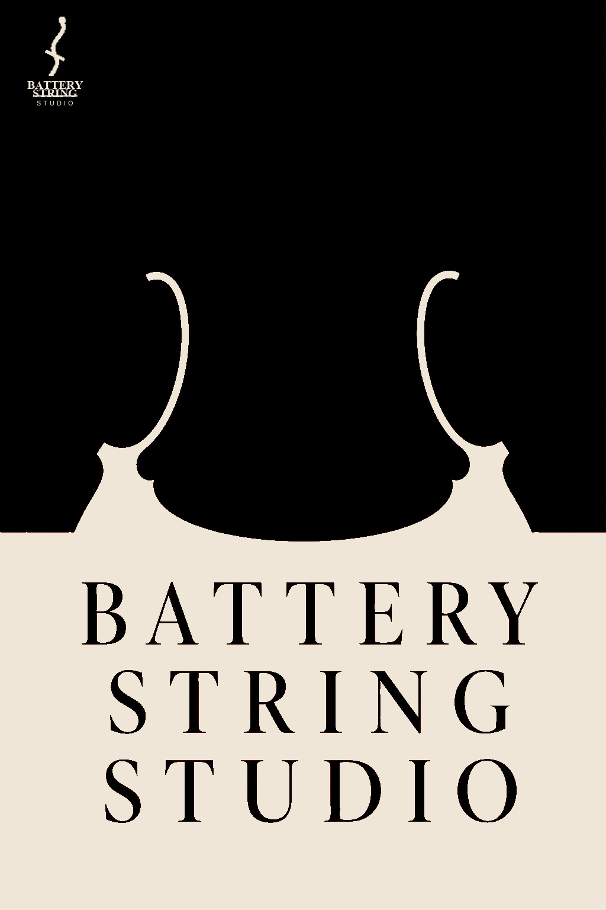

Viola frames are taken from the original v3 poster (same shape every time). Watermark uses your extracted mark with tighter stacked type, tinted to each accent.





public/brand/colorways/. Watermark SVG (tight spacing):
bss-watermark.svg.